<!DOCTYPE html>
<html lang="ml">
<head>
  <meta charset="utf-8">
  <meta name="viewport" content="width=device-width, initial-scale=1.0">
  <title>Pages 21-40 - Class 7 Social science</title>
  <style>

:root {
  --bg-color: #fcfcfd;
  --card-bg: #ffffff;
  --text-color: #1e293b;
  --text-muted: #64748b;
  --primary-color: #0284c7;
  --primary-light: #e0f2fe;
  --border-color: #e2e8f0;
  --radius: 10px;
  --shadow: 0 4px 6px -1px rgb(0 0 0 / 0.05), 0 2px 4px -2px rgb(0 0 0 / 0.05);
}

body {
  font-family: -apple-system, BlinkMacSystemFont, "Segoe UI", Roboto, "Noto Sans Malayalam", "Manjari", "Gayathri", sans-serif;
  background-color: var(--bg-color);
  color: var(--text-color);
  line-height: 1.8;
  font-size: 1.1rem;
  margin: 0;
  padding: 0;
}

.container {
  max-width: 860px;
  margin: 0 auto;
  padding: 2.5rem 1.5rem 5rem 1.5rem;
}

header {
  margin-bottom: 2.5rem;
  padding-bottom: 1.5rem;
  border-bottom: 2px solid var(--border-color);
}

.badge-row {
  display: flex;
  gap: 0.5rem;
  margin-bottom: 0.75rem;
  flex-wrap: wrap;
}

.badge {
  display: inline-block;
  font-size: 0.75rem;
  font-weight: 700;
  text-transform: uppercase;
  letter-spacing: 0.05em;
  padding: 0.25rem 0.65rem;
  border-radius: 9999px;
  background: var(--primary-light);
  color: var(--primary-color);
}

.badge-medium {
  background: #fef3c7;
  color: #b45309;
}

.badge-class {
  background: #dcfce7;
  color: #15803d;
}

h1 {
  font-size: 2.1rem;
  font-weight: 800;
  margin: 0.5rem 0 1rem 0;
  line-height: 1.3;
  color: #0f172a;
}

.nav-bar {
  display: flex;
  justify-content: space-between;
  margin: 1.5rem 0;
  font-size: 0.95rem;
  flex-wrap: wrap;
  gap: 0.5rem;
}

.nav-bar a {
  color: var(--primary-color);
  text-decoration: none;
  font-weight: 600;
  padding: 0.5rem 1rem;
  border-radius: var(--radius);
  background: var(--card-bg);
  border: 1px solid var(--border-color);
  transition: all 0.2s ease;
}

.nav-bar a:hover {
  background: var(--primary-light);
  border-color: var(--primary-color);
}

.nav-bar .disabled {
  color: var(--text-muted);
  pointer-events: none;
  border-color: transparent;
  background: transparent;
}

.page-section {
  background: var(--card-bg);
  border: 1px solid var(--border-color);
  border-radius: var(--radius);
  box-shadow: var(--shadow);
  padding: 2rem;
  margin-bottom: 2.5rem;
}

.page-header {
  display: flex;
  align-items: center;
  justify-content: space-between;
  margin-bottom: 1.25rem;
  padding-bottom: 0.5rem;
  border-bottom: 1px dashed var(--border-color);
}

.page-number {
  font-size: 0.8rem;
  font-weight: 700;
  text-transform: uppercase;
  color: var(--text-muted);
  letter-spacing: 0.05em;
}

.page-content p {
  margin: 0 0 1.25rem 0;
  white-space: pre-wrap;
  word-break: break-word;
}

.page-content p:last-child {
  margin-bottom: 0;
}

.diagram-card {
  margin: 2rem 0;
  text-align: center;
  background: #f8fafc;
  border: 1px solid var(--border-color);
  border-radius: var(--radius);
  padding: 1rem;
  overflow: hidden;
}

.diagram-card img {
  max-width: 100%;
  height: auto;
  border-radius: calc(var(--radius) - 4px);
  display: inline-block;
  box-shadow: 0 2px 4px rgba(0,0,0,0.04);
}

.diagram-card figcaption {
  font-size: 0.85rem;
  color: var(--text-muted);
  margin-top: 0.75rem;
  font-weight: 500;
}

footer {
  margin-top: 3rem;
  padding-top: 2rem;
  border-top: 2px solid var(--border-color);
}

  </style>
</head>
<body>
  <div class="container">
    <header>
      <div class="badge-row">
        <span class="badge badge-class">Class 7</span>
        <span class="badge badge-medium">Malayalam Medium</span>
        <span class="badge">Social science</span>
        <span class="badge">Part 1</span>
      </div>
      <h1>Pages 21-40</h1>
      <div class="nav-bar"><a href="part_1_pages_120.html">← Pages 1-20</a><a href="index.html">☰ Index</a><a href="part_1_pages_4160.html">Pages 41-60 →</a></div>
    </header>
    <main>
<section class="page-section" id="page-21">
  <div class="page-header"><span class="page-number">Page 21</span></div>
  <figure class="diagram-card" id="fig_ch02_p021_01"><figcaption>Figure fig_ch02_p021_01 (Page 21)</figcaption></figure>
  <figure class="diagram-card" id="fig_ch02_p021_02"><figcaption>Figure fig_ch02_p021_02 (Page 21)</figcaption></figure>
  <figure class="diagram-card" id="fig_ch02_p021_03"><figcaption>Figure fig_ch02_p021_03 (Page 21)</figcaption></figure>
  <div class="page-content">
    <p>iˆ¢šu¡ƀ}Ĺ››Žų–ƠųŽ¡}g}›ÆŠ—‹šŽDZš‚Ǵc†›†›ų›Žų<br>£””““›“š—c–‚›–Ƣ„šcmų›“c–Œž—Ĺ›Æsš¡ƀĞ›Žų<br>ƀ<br>͌¢ųšĞ¢ˆšs¢ƠšÇ†›ā‘¡} ŒƠ›Æ“›”š“cŒ¢†š—Ž“Œš<br>pŽ¡‚Ž“§iĬ§h¡‚Ž“›Æ†›Ž“…›“DZšˆšŽ›sÇzœ“›Úų<br>e“›¡}†›āÇÚ§Œš›sDZÚƼs‘c ŒŽ‚sā‘cˆ“›’ā‘c<br>ŒĹs‘c ‚›ĹŽā‘c“›ƹ†Ʃ§“㛎›Úų‚§sšǰe“›¡}<br>s‚›ŽsÇqĕ§ŒŦ›Ž›‚}›‚}ā›“¡Ƽǰ“›ÆڝųÎ<br>¡šŒ›c¢ušˆ–§<br>“›z†uŽc –ŭŔ›ă ¢ˆšÅăuœ–§–ĕšŽ›
<br>Œs‘›Æ†Æs››Ğǫ –ĕšŽÚ›ƀ§“š›ă“¢Ƽš<br>“›z†uŽĹ›¡źƂ­€›fŽšzDZc–ŭŔ›ăp¢Ğ¡–ĕšŽ›sÇ¢Žt¡ƀ}Ĺ››ĞĬ§<br>z†ā‘¡} Ƃ…š† ¡‚š’›Æ Օ›š›Žų –›ÆÚ§ ˆŽĹ› “Ȼā‘š§<br>–š…šŽš›iˆ¢šu›ă›Žų‚§“›z†uŽĹ›¡źxǮŒǫ “ŽĬs›}ڝų<br>Ƃ¢„”ā¡‘ z¢–x†¢šuDZŒšÚ›15ǰ †žǮšĬ›Æ†›Åƣ›ă sŒšˆŽcs‘“c<br>—›Ž›s†šc‚cu‹ŝ†„›Ú§s¡s ¡sĞ›e¡ÚНc sšÅ•›s ¢Œt¡<br>ˆǏ›¡ƀ}Ĺ›<br>‹žŒ›–Å¢ǁ¡xƪ§u†›“šŽŒ†–Ž›ă§†›s‚›†›DŽ›ă›Žų‹ž†›s‚›Ú§<br>ˆ¢Œ ¡‚š’›Æ†›s‚›“œĞ†›s‚›“›“›…‚ŽĹ›ǫ £–Ä–§‰œ–sÇ<br>¢sš}‚›”›äe†–Ž›ăǫ ˆ›’sÇmų›“š›Žųu“áŒź›¡źƂ…š†<br>“ŽŒš† ŒšÅuāÇ<br>“›z†uŽcpŽ“›“DZšˆšŽ ¢sůŒš›“›sš–c Ƃšˆ›ăgŦDZ¡}c<br>¢šsś¡źc“›“›… ‹šuā‘›Æ†›ųc“DZšˆšŽ›sÇ¢ˆŽ¢sĞ“›z†uŽĹ›Æ<br>mś¢ăÅų›Žų‹Žš…›sšŽ›sÇ“›¢„” “DZšˆšŽĹ›†§“‘¡Ž¢¡ ¢ƂšŇš—†c<br>†Æs›¢ˆšÅăuœ–sšÅڝceŠ›sÇڝŒš›Žų“›¢„” “DZšˆšŽĹ›¡ź<br>sĹsiĬš›Žų‚§£x†NJœÿmųœŽšzDZā‘Œšc“DZšˆšŽc †}ų›Žų<br>e¢ŠDZŒ¢…DZ•DZmų›“›}ā‘›Æ†›ųc¡sšĬ“ų›Žų s‚›Žs‘¡} să“}c<br>Ƃ…š†Œšc†}ś›Žų‚§eŠ›s‘š›Žųs‚›ŽsÇsă“}ś¡pŽ<br>Ƃ…š†g†Œš›Žųs‚›ŽÚă“}śÆnÅ¡ƀĞ›Žų Ƃš¢„”›s să“}ښÅ<br>Ís‚›Ž¡ăĞ›sÇÎmų›¡ƀНsšâ¢ŒeŠ›s¡‘ ˆ›Ŧǫ›¢ˆšÅăuœ–sšÅ<br>h să“}ś¡ź †›ũc n¡Ǯ}Ĺ “DZšˆšŽĹ›Æ †›ųǫ “ŽŒš†c<br>Žšȸś¡ź–Ơ„§“DZ“Ǚ¡ ”Þ›¡ƀ}Ĺ›†uŽĹ›Æ†›ųc‹›ă £x†œ–§<br>ŒÃˆšŅāÇ£x†Œšǫ să“}ŠŰ¡Ĺ –žx›ƀ›Úų<br>Œ…DzsšgŦDz<br>21</p>
  </div>
</section>
<section class="page-section" id="page-22">
  <div class="page-header"><span class="page-number">Page 22</span></div>
  <figure class="diagram-card" id="fig_ch02_p022_01">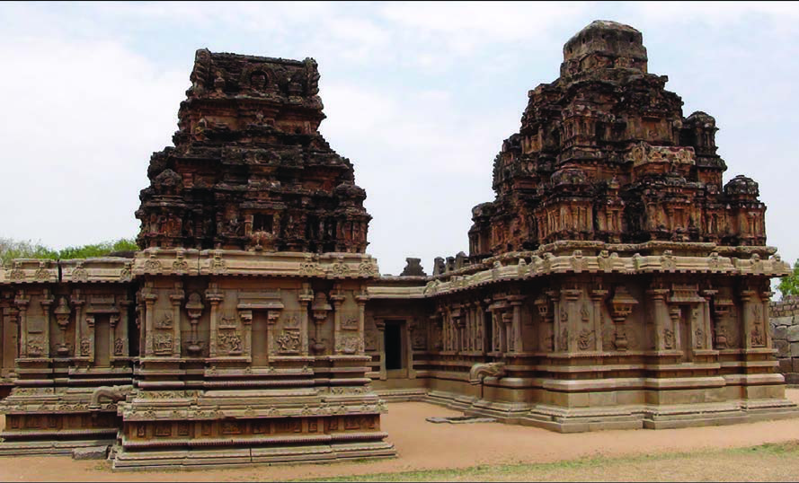<figcaption>Figure fig_ch02_p022_01 (Page 22)</figcaption></figure>
  <figure class="diagram-card" id="fig_ch02_p022_02">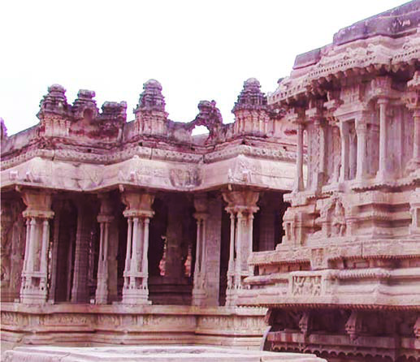<figcaption>Figure fig_ch02_p022_02 (Page 22)</figcaption></figure>
  <figure class="diagram-card" id="fig_ch02_p022_03"><figcaption>Figure fig_ch02_p022_03 (Page 22)</figcaption></figure>
  <figure class="diagram-card" id="fig_ch02_p022_04">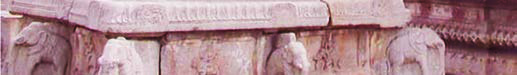<figcaption>Figure fig_ch02_p022_04 (Page 22)</figcaption></figure>
  <div class="page-content">
    <p>–DZǘšŽ›sc<br>x›Ņc1.12<br>—–šŽŽšŒ¢äŅc—cˆ›<br>x›Ņc1.13<br>“›Ĺ–ǴšŒ›¢äŅc—cˆ›<br>–šŒž—Dz”šȼc<br>‹šuc 1<br>22<br>VII</p>
  </div>
</section>
<section class="page-section" id="page-23">
  <div class="page-header"><span class="page-number">Page 23</span></div>
  <figure class="diagram-card" id="fig_ch02_p023_01"><figcaption>Figure fig_ch02_p023_01 (Page 23)</figcaption></figure>
  <figure class="diagram-card" id="fig_ch02_p023_02"><figcaption>Figure fig_ch02_p023_02 (Page 23)</figcaption></figure>
  <div class="page-content">
    <p>“›z†uŽ sšvĞśÆ –ǰǗšŽ›sŽcu“c “›ˆ¢Žšu‚› £s“Ž›ă<br>¢“„ā‘¡}c ”šȻā‘¡}c ˆ~†Ĺ›†¢“Ĭ› †›Ž“…› ˆš~”šsÇ<br>Ǚšˆ›ă›Žųs“šǘ“›„DZ”›ƹs–š—›‚DZc–cuœ‚c‚}ā›¢Œts‘›Æ<br>“›z†uŽsšĹ§e‹ž‚ˆžÅ“Œš“‘Å㍝Ĭš›ÕǑ¢„“Žš¡Ž¢ƀšǫ<br>ŽšzšÚŶšÅs¡}c–š—›‚DZś¡źc–cŽäsÅf›ŽųÍŝš“›<br>”›ƹŽœ‚›Îš§eų§sž}‚šcƂšŠDZśĬš›Žų‚§¢ušˆŽāÇ<br>mų›¡ƀ}ų‹œŒšsšŽā‘š¢äŅs“š}ā‘š§“›z†uŽ”›ƹs¡}<br>Œ¡ǮšŽƂ…š†–“›¢”•‚<br>x›Ņc1.14 <br>“›Žžˆšä¢äŅc—cˆ›<br>x›Ņc1.15<br>¢šĞ–§Œ—Æ—cˆ›<br>–š—›‚DZŽcu“c gښĹ§ “‘¡Ž…›sc ˆ¢Žšu‚› £s“Ž›ă ¡‚ÿ§<br>–š—›‚DZŒš§nǮ“csž}‚Æ“›sš–cƂšˆ›ă‚§sž}š¡‚†›Ž“…›–cȾ‚<br>Ղ›sÇ“›“›…Ƃš¢„”›s‹š•s‘›¢Ú§“›“Åņc¡xƭ¡ƀĞ‚chsšĹš§<br>Œ…DzsšgŦDz<br>23</p>
  </div>
</section>
<section class="page-section" id="page-24">
  <div class="page-header"><span class="page-number">Page 24</span></div>
  <figure class="diagram-card" id="fig_ch02_p024_01"><figcaption>Figure fig_ch02_p024_01 (Page 24)</figcaption></figure>
  <div class="page-content">
    <p>‚}ÅƂ“ÅņāÇ<br>z<br>“›z†uŽ ‹Žsš¡Ĺ –ǰǗšŽ›s –c‹š“†sÇ–cŠŰ›ă x›ŅāÇ<br>¢”tŽ›ă§pŽ›z›ǮÆfƊc‚ƭššÚ›㚖›Æe“‚Ž›ƀ›Úž<br>z es§ŠÅÕǑ¢„“ŽšÅmų›“Ž¡}sšvĞśÆ“›“›…¢Œts‘›Æ£s“Ž›ă<br>¢†ĞāÇŒšĶsšˆŽŒš›Žų‚ų›Ğǫ –žx†s‘¡}e}›Ǚš†Ĺ›Æ<br>g“Ž¡} –c‹š“†sÇ‚šŽ‚ŒDZc ¡xƪ§¡–Œ›†šÅ–cv}›ƀ›Úž<br><br>–žx†sÇ<br><br>z‹ŽŽœ‚›<br>z –cǗšŽc<br><br>z–Ơŧ<br>z †œ‚›†DZšc<br>z ŒuÇ“›z†uŽ ‹Ž–Ƣ„šā‘¡} ¡ˆš‚–“›¢”•‚sÇ‚šŽ‚ŒDZc<br>¡xƪ§ˆĞ›s ˆžÅśšÚs<br>ŒuNjŽc<br>“›z†uŽ‹Žc<br>z Žšz“š’§x<br>z Žšz“š’§x<br>z<br>z<br>z<br>z<br>z<br>z<br>z<br>z<br>z<br>ŒuÇ‹ŽsšĹ§“›“›… ¢Œts‘›Ĭš–Œ†Ǵ¡Ĺ –cŠŰ›ă§<br>x›ŅāÇ¢”tŽ›ă§㚖›Æe“‚Žc †}ŝs<br>–šŒž—Dz”šȼc<br>‹šuc 1<br>24<br>VII</p>
  </div>
</section>
<section class="page-section" id="page-25">
  <div class="page-header"><span class="page-number">Page 25</span></div>
  <figure class="diagram-card" id="fig_ch02_p025_01">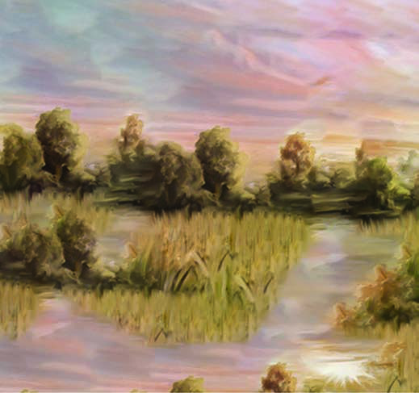<figcaption>Figure fig_ch02_p025_01 (Page 25)</figcaption></figure>
  <figure class="diagram-card" id="fig_ch02_p025_02">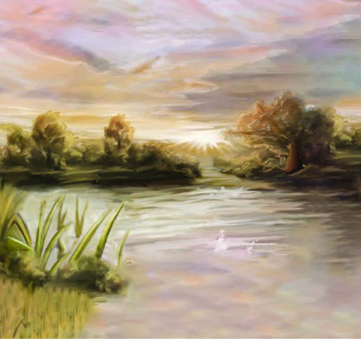<figcaption>Figure fig_ch02_p025_02 (Page 25)</figcaption></figure>
  <figure class="diagram-card" id="fig_ch02_p025_03"><figcaption>Figure fig_ch02_p025_03 (Page 25)</figcaption></figure>
  <figure class="diagram-card" id="fig_ch02_p025_04"><figcaption>Figure fig_ch02_p025_04 (Page 25)</figcaption></figure>
  <figure class="diagram-card" id="fig_ch02_p025_05"><figcaption>Figure fig_ch02_p025_05 (Page 25)</figcaption></figure>
  <figure class="diagram-card" id="fig_ch02_p025_06"><figcaption>Figure fig_ch02_p025_06 (Page 25)</figcaption></figure>
  <figure class="diagram-card" id="fig_ch02_p025_07"><figcaption>Figure fig_ch02_p025_07 (Page 25)</figcaption></figure>
  <div class="page-content">
    <p>Œ…DzsšgŦDz–DZǘšŽ›s<br>Ƃǚš†āÇ<br>2<br>‚Œ›’§“Ž›sÇ<br>¢sš¢†›“š’cssš§ˆ›¢ƀ¢†<br>‚›Ž¢“ÿ}ăž£†›ÆŒœ†š§ˆ›Úc<br>¢“ÿ}ŧ¡xƠsŒš§†›Åڝc<br>¢“ÿ}Œ£¢ŒÆ‚Ơ—Œš§<br>¢sš››Ä“š–›Æˆ}›š§s›}Ŧc<br>s¢”tŽfȺšÅ<br>‘¡ˆŽŒšÇ‚›Ž¡Œš’›’<br>“›“Åņc<br>‚›Ž¢“ÿ}Œ›ÆpŽƂš“š§<br>e“›}¡Ĺ s‘Ĺ›ÆpŽŒœ†š§<br>pŽ¡xƠsŒš§Œ›¡ ‚žš§<br>¢äŅś¡pŽ ˆ}›š§<br>mÿ›cz†›ăšÆŒ‚›<br>pĈ‚ǰ†žǮšĬ›Æ¢sŽ‘Ĺ›Æzœ“›ă›Žųs¢”tŽfȺšÅmų‹Þs“›<br>Žx›ăÍ¡ˆŽŒšÇ‚›Ž¡Œš’›ÎmųՂ››¡pŽ ‹šuŒš§Œs‘›Æ†Æs››Ž›Úų‚§<br>h“Ž›s‘›ž¡} †›āÇÚ§‹›Úųf”cmŦš§?<br>£„“Ĺ›†§–ƠžÅŒš›zœ“›‚c–Ǵc–ŒÅƀ›Úų‚›¡†š§‹Þ›mų<br>ˆų‚§‹Þ›¡e}›Ǚš†ŒšÚ›iÅų“ųf”ā‘cƂ“Åņā‘Œš§<br>‹Þ›ƂǙš†cmų›¡ƀ}ų‚§<br>Œ…DZsšvĞśÆgŦDZ›Æ†›†›ų›ŽųšƒšǙ›‚›s sš’§xƀš}czš‚›<br>“DZ“Ǚcz†āÇڛ}›Æ“›¢“x†cǔǏ›ă›Žų–šŒž—DZ“›¢“x†c¢†Ž›Ğ›Žų</p>
  </div>
</section>
<section class="page-section" id="page-26">
  <div class="page-header"><span class="page-number">Page 26</span></div>
  <figure class="diagram-card" id="fig_ch02_p026_01"><figcaption>Figure fig_ch02_p026_01 (Page 26)</figcaption></figure>
  <figure class="diagram-card" id="fig_ch02_p026_02"><figcaption>Figure fig_ch02_p026_02 (Page 26)</figcaption></figure>
  <figure class="diagram-card" id="fig_ch02_p026_03"><figcaption>Figure fig_ch02_p026_03 (Page 26)</figcaption></figure>
  <div class="page-content">
    <p>–šŒž—Dz”šȼc<br>‹šuc 1<br>26<br>VII<br>z†“›‹šuāÇ‹Þ›ƂǙš†Ĺ›¢Ʃ§fÕǏŽš›⢌“DZ‚DZǘsšā‘›Æ<br>gŦDZ›Æ“›“›… „Å”†ā‘¡}ce†ǐš†ā‘¡}c–Œ†Ǵ“ŒĬš›<br>gƂsšŽcŒ…DZsšvĞśÆgŦDZ¡šĞš¡s“DZšˆ›ă ŽĬ§Ƃ…š† –ǰǗšŽ›s<br>ƂǙš†ā‘š‹Þ›–ž‰›ƂǙš†ā¡‘ڝ›ăš§†ǰhe…DZšĹ›Æ<br>xÅă¡xƭų‚§<br>„䛢ŦDzÄ‹Þ›Ƃǚš†c<br>gǏ£„“¢Ĺš}ǫexĕŒš‹Þ›¡ –žx›ƀ›Úųuœ‚ā‘csœÅņā‘c<br>Žx›ă›Žų‹Þs“›sÇ„䛢ŦDZ›Æzœ“›ă›ŽųfȺšÅŒšÅmų›¡ƀĞ›Žų<br>“›Ǒ‹ÞŽc†š†šÅŒšÅmų›¡ƀĞ›Žų”›“‹ÞŽŒš§h‹Þs“›sÇ<br>–›g7 Œ‚Æ12ǰ †žǮšĬsÇڛ}›Æ†›†›ų›ŽųhƂǙš†Ĺ›¡ź<br>–“›¢”•‚sÇ¢†šÚž<br>Ƃš¢„”›s<br>‹š•s‘›Æ<br>sœÅņā‘¡}<br>Žx†c<br>fšˆ†“c<br>„䛢ŦDzÄ<br>‹Þ›Ƃǚš†c<br>£„“¢Ĺš}Ǭ<br>¢ǜ—“c<br>–ŒÅƀ“c<br>gǐ£„“<br>¢Ĺš}Ǭ<br>esŒ’›Ě<br>fŽš…†<br>ȼœsÇÚ§<br>‚DzŒš<br>ˆÿš‘›Ĺc<br>zš‚›“Dz‚Dzš<br>–Œ›ƽš¡‚<br>mƽš“Åڝc<br>Ƃ¢“”†c</p>
  </div>
</section>
<section class="page-section" id="page-27">
  <div class="page-header"><span class="page-number">Page 27</span></div>
  <figure class="diagram-card" id="fig_ch02_p027_01"><figcaption>Figure fig_ch02_p027_01 (Page 27)</figcaption></figure>
  <figure class="diagram-card" id="fig_ch02_p027_02"><figcaption>Figure fig_ch02_p027_02 (Page 27)</figcaption></figure>
  <figure class="diagram-card" id="fig_ch02_p027_03">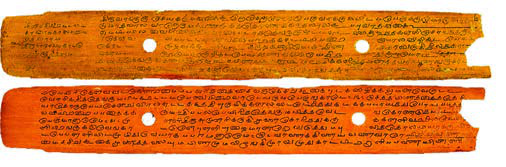<figcaption>Figure fig_ch02_p027_03 (Page 27)</figcaption></figure>
  <div class="page-content">
    <p>Œ…DzsšgŦDz–DZǘšŽ›sƂǚš†āÇ<br>27<br>‚Œ›’§†šĞ›š§ ‹Þ›ƂǙš†c pŽ z†sœ ƂǙš†Œš› Žžˆc ¡sšĬ‚§<br>fȺšÅŒšŽc †š†šÅŒšŽc Ƃš¢„”›s‹š•s‘›Æ ‹Þ›uš†āÇ fˆ›ă§<br>¢„”–ĕšŽc†}ś›Žų‚¡sšĬ§z†āÇڛ}›Æ‹Þ›ƂxŽ›ăe†šxšŽā‘c<br>e–Œ‚Ǵā‘c”ÞŒš›ŽųeښĹ§‹Þs“›s‘¡} Žx†sÇ–š…šŽÚš¡Ž<br>n¡ –Ǵš…œ†›ă –Œž—Ĺ›Æ †›†›ų›Žų eÅĽ”ž†DZŒš fxšŽāÇ<br>¢xš„DZc¡xƭ¡ƀНzš‚›¢‹„Œ¢†DZ<br>–Œž—Ĺ›¡ mƼš<br>“›‹šuc<br>z†ā‘c‹Þ›ƂǙš†Ĺ›¢Ú§<br>fÕǏŽš›fȺšÅŒšŽ¡}c<br>†š†šÅŒšŽ¡}c<br>Žx†sÇ<br>£—ŭ“ Œ‚¡Ĺ sž}‚Æz†sœ<br>ŒšÚ›<br>fȺšÅŒšŽ¡} Žx†sÇ͆šš›Ž„›“DZƂŠŰcÎmųc †š†šÅŒšŽ¡} Žx†sÇ<br>͂›ŽŒ£sÇÎmųce›¡ƀНgښĹ§…šŽš‘c¢äŅā‘c†›Åƣ›Ú¡ƀН<br>‹Þ›Ƃǚš†Ĺ›¡Ƃ…š†s“›sÇ<br>s¢”tŽfȺšÅ<br>¡ˆŽ›šȺšÅ<br>†ƣšȺšÅ<br>fĬšÇ<br>“›Ǒ‹ÞÅ<br>fȺšÅŒšÅ
<br>‹Þ›ƂǙš†Ĺ›¡<br>Ƃ…š† s“›sÇ<br>sšŽƩÆeƣšÅ<br>eƀÅ<br>–cŠŰÅ<br>–ŭŽÅ<br>Œš›Ú“š–uÅ<br>”›“‹ÞÅ<br>†š†šÅŒšÅ
<br>„䛢ŦDZÄ‹Þ›ƂǙš†ceų¡Ĺ –šŒž—DZ“DZ“Ǚ›Æ<br>m¡ŦƼǰ ŒšǮāÇiĬšÚ›? s›ƀ§‚ƭššÚž<br>‹Þ›ƂǙš†c⢌gŦDZ¡} “›“›… ‹šuā‘›¢Ú§“DZšˆ›ÚšÄ‚}ā›<br>“›“›… Ƃ¢„”ā‘›¡‹Þ›ƂǙš†Ĺ›¡źƂxšŽs¡Ž †ŒÚ§ˆŽ›x¡ƀ}ǰ<br>Š–“Ĵsų}¢„”¡ĹŒ†•Dz¢ǜ—›<br>Š–“ĴŽžˆœsŽ›ăÍe†‹“ ŒįˆcÎmųxÅăš¢“„››Æ†}ųpŽ xÅ㍝¡}<br>x›ŅœsŽŒš§x“¡} ¢xÅĹ›Ğ‘‘‚§x›ŅcNJŗ›Úž<br>x›Ņc2.1 <br>CE 1700Æ‚Œ›’§†šĞ›¡pŽ”›“¢äŅśÆ†›ųc<br>s¡Ĭ}Ĺ ¢‚“šŽcmųՂ›¡}s¡ƭ’Ĺ§</p>
  </div>
</section>
<section class="page-section" id="page-28">
  <div class="page-header"><span class="page-number">Page 28</span></div>
  <figure class="diagram-card" id="fig_ch02_p028_01">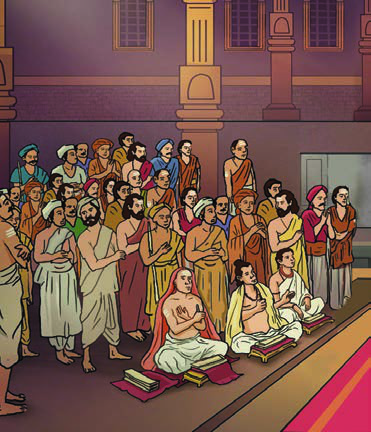<figcaption>Figure fig_ch02_p028_01 (Page 28)</figcaption></figure>
  <figure class="diagram-card" id="fig_ch02_p028_02"><figcaption>Figure fig_ch02_p028_02 (Page 28)</figcaption></figure>
  <figure class="diagram-card" id="fig_ch02_p028_03"><figcaption>Figure fig_ch02_p028_03 (Page 28)</figcaption></figure>
  <figure class="diagram-card" id="fig_ch02_p028_04"><figcaption>Figure fig_ch02_p028_04 (Page 28)</figcaption></figure>
  <figure class="diagram-card" id="fig_ch02_p028_05"><figcaption>Figure fig_ch02_p028_05 (Page 28)</figcaption></figure>
  <figure class="diagram-card" id="fig_ch02_p028_06">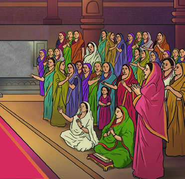<figcaption>Figure fig_ch02_p028_06 (Page 28)</figcaption></figure>
  <figure class="diagram-card" id="fig_ch02_p028_07">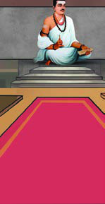<figcaption>Figure fig_ch02_p028_07 (Page 28)</figcaption></figure>
  <figure class="diagram-card" id="fig_ch02_p028_08"><figcaption>Figure fig_ch02_p028_08 (Page 28)</figcaption></figure>
  <figure class="diagram-card" id="fig_ch02_p028_09"><figcaption>Figure fig_ch02_p028_09 (Page 28)</figcaption></figure>
  <figure class="diagram-card" id="fig_ch02_p028_10"><figcaption>Figure fig_ch02_p028_10 (Page 28)</figcaption></figure>
  <figure class="diagram-card" id="fig_ch02_p028_11"><figcaption>Figure fig_ch02_p028_11 (Page 28)</figcaption></figure>
  <figure class="diagram-card" id="fig_ch02_p028_12"><figcaption>Figure fig_ch02_p028_12 (Page 28)</figcaption></figure>
  <figure class="diagram-card" id="fig_ch02_p028_13"><figcaption>Figure fig_ch02_p028_13 (Page 28)</figcaption></figure>
  <div class="page-content">
    <p>–šŒž—Dz”šȼc<br>‹šuc 1<br>28<br>VII<br>eۓ›”Ǵš–ā‘¡}<br>ˆ›¢s¢ˆšsų“¡Ž<br>¢Œšx›ƀ›ÚšÄ<br>mŦš§¡x¢ƭĬ‚§#<br>zŶc¡sšĬc<br>¡‚š’›Æ¡sšĬc<br>f‘s¡‘<br>¢“Å‚›Ž›Úų‚§<br>”Ž›š¢š#<br>–Œž—ˆ¢Žšu‚›Ʃ§<br>¡ˆÃsĞ›s‘¡}<br>“›„DZš‹DZš–“c<br>ƂšˆžÅśš<br>¢”•c“›“š—“c<br>Ƃ…š†Œš§<br>£””““›“š—c<br>¡ˆÃsĞ›s‘¡}<br>f¢ŽšuDZ“c<br>“›„DZš‹DZš–“c<br>†”›ƀ›Ú›¢Ƽ#<br>fќ<br>ˆ¢Žšu‚›c<br>–Ǵ‚ũx›Ŧc<br>¢†}¡Œÿ›Æ<br>Þ›¢Šš…“c<br>e†‹“ā‘c<br>Ƃ…š†Œš§<br>zš‚œŒš<br>“›¢“x†āÇ<br>–šŒž—DZ<br>ˆ¢Žšu‚›¡<br>‚}c<br>x›Ņc 2.2<br>Š–“Ĵe†‹“ŒįˆĹ›Æz†ā‘Œš›xÅă†}ŝų<br>x›ŅsšŽ¡ź‹š“†›Æ
<br>e†‹“Œįˆc<br>ˆũĬǰ†žǮšĬ›ÆŠ–“ĴǙšˆ›ăfќ xÅăš¢“„›š§<br>e†‹“Œįˆc eƼŒ<br>Ƃ‹ eÚ<br>Œ—š¢„“› mų›“Å<br>e†‹“ŒįˆĹ›¡ xÅăsÇÚ§¢†Ķ‚Ǵc †Æs››Žųzš‚›<br>›cu“›¢“x†cmų›“ ˆŽ›u›Úš¡‚mƼš“Åڝc xÅăs‘›Æˆ¡ÿ}ÚšÄ<br>e“–Žc‹›ă›Žųfќ xÅăsÇڝce›“§ˆ‚Ú›†Œš›Ğš§<br>z†āÇ e†‹“ŒįˆĹ›Æ mś›Žų‚§ xÅ㍛Æ iÅų“ų<br>f”ā¡‘͓x†āÇÎmų¢ˆŽ›Æz†ā‘›¢Ú§ˆsÅų§†Æs›<br>g‚›Æ†›ųceښ¡Ĺ –šŒž—›sš“Ǚ¡Ú›ă§†›āÇÚ§m¡ŦƼǰ<br>Œ†Ǡ›š¡ų§m’‚ž<br><br>zš‚œŒš “›¢“x†ādž›†›ų›Žų<br>ˆũĬǰ †žǮšĬ›Æ sų} ¢„”ŧ zœ“›ă›Žų ‚‚Ǵx›Ŧs†c –šŒž—DZ<br>ˆŽ›•§sÅŚ“c s“›Œš›Žų Š–“Ĵ –Œž—Ĺ›Æ †›†›ų›Žų<br>–šŒž—›s“c Œ‚ˆŽ“Œš “›¢“x†ā¡‘z†āÇÚ§Œ†Ǡ›šÚ›¡Úš}ÚšÄ<br>e¢Ŕ—c‚œŽŒš†›ăe“¡ ‚}㝆œÚ“š†c Ƃŀ›ă–Ǵš‚ũDZc–Œ‚Ǵc<br>–šŒž—DZ†œ‚›mų›“›…›ǐ›‚Œš sš’§xƀš}š§Š–“ĴŒ¢ųšĞ“ェe¢Ŕ—c<br>Ǚšˆ›ă “œŽ£”“ ƂǙš†Ĺ›ž¡}š§hf”āÇn¢sšˆ›ƀ›ă‚§</p>
  </div>
</section>
<section class="page-section" id="page-29">
  <div class="page-header"><span class="page-number">Page 29</span></div>
  <figure class="diagram-card" id="fig_ch02_p029_01"><figcaption>Figure fig_ch02_p029_01 (Page 29)</figcaption></figure>
  <figure class="diagram-card" id="fig_ch02_p029_02"><figcaption>Figure fig_ch02_p029_02 (Page 29)</figcaption></figure>
  <figure class="diagram-card" id="fig_ch02_p029_03"><figcaption>Figure fig_ch02_p029_03 (Page 29)</figcaption></figure>
  <figure class="diagram-card" id="fig_ch02_p029_04"><figcaption>Figure fig_ch02_p029_04 (Page 29)</figcaption></figure>
  <figure class="diagram-card" id="fig_ch02_p029_05"><figcaption>Figure fig_ch02_p029_05 (Page 29)</figcaption></figure>
  <figure class="diagram-card" id="fig_ch02_p029_06"><figcaption>Figure fig_ch02_p029_06 (Page 29)</figcaption></figure>
  <div class="page-content">
    <p>Œ…DzsšgŦDz–DZǘšŽ›sƂǚš†āÇ<br>29<br>“œŽ£”“ƂǙš†Ĺ›¡źƂ…š† Ƃ“ÅņāÇx“¡} †Æs››Ž›Úų“š§<br>Ɩšǥ¢Œ…š“›‚Ǵ¢Ĺc ¢“„ā‘¡}<br>ƂšŒš›s‚¢c ¢xš„DZc¡xƪ<br>zš‚›“›¢“x†Ĺ›†c<br>Ȼœ“›¢“x†Ĺ›†¡Œ‚›¡Žz†ā¡‘<br>¢Šš…“Æڎ›ă<br>ns£„““›”Ǵš–c¢ƂšŇš—›ƀ›ă<br>¡‚š’››¡źce…Ǵš†Ĺ›¡źc Œ—‚Ǵc<br>z†ā¡‘ ¢Šš…DZ¡ƀ}Ĺ›<br>£””““›“š—¡Ĺm‚›Åڝsc<br>ƂšˆžÅś“›“š—c“›…“šˆ†Å“›“š—c<br>mų›“ ¢ƂšŇš—›ƀ›Úsc¡xƪ<br>Œ†•Dz¢ǜ—“c –Œ‚ǵ“ciÅĹ›ÚšĞ›<br>Š–“Ĵ¡}–¢ŭ”āÇ<br>x›Ŧc Ƃƽśc †ųššÆŽšȸciÅă ¢†}c<br>n‚ zš‚››Æ¡ˆĞ“Žššc Œ†•DZÅ¡ÚƼǰe“sš”āÇ‚DZŒš§<br>h”ǴŽšŽš…†Ʃ§g}†›ÚšÅf“”DZŒ›Ƽ<br>ˆ†ÅzŶŒ›ƼhzŶc…†DZŒšÚ›zœ“›Úž<br>“œŽ£”“ƂǙš†czš‚›“DZ“Ǚ¢ce–Œ‚Ǵā¢‘c ¢xš„DZc<br>¡xƪ›ŽųhƂǘš“† “››ŽĹs<br>sŠœÅŒš†“£ŒŅ›¡}ƂxšŽsÄ<br>h“Ž›sÇ“š›Úž<br>eǫšŽšŒÄsŽ›c¢s”“—Ž›—Ǟŧmų›ā¡†<br>£„“Ĺ›† “›‘›¢ƀŽs‘Ĭ†“…›<br>¡ˆšųŽÚ›ƀ›‚‚ǰ“‘sÇ¢Œš‚›Žā‘c¡ˆšų§‚š†Ƽ¢š?<br>£“zš‚DZādžǰ†›Åƣ›Úc ˆ„ā‘›ÆŒšŅc<br>†›āÇs¡Ĭśf”āLjž<br>ˆ‚›†ĕǰ†žǮšĬ›Æ“}¢ÚgŦDZ›Ægų¡ĹiĹÅƂ¢„”§
zœ“›ă›Žų<br>‹Þ›ƂǙš†Ĺ›¡źƂxšŽs†š›ŽųsŠœÅm’‚› “Ž›s‘š›“<br>x›Ņc 2.3<br>sŁš}s›¡Š–“<br>sDZš›ÆǙšˆ›ă›Ž›Úų<br>Š–“Ĵ¡}Ƃ‚›Œ</p>
  </div>
</section>
<section class="page-section" id="page-30">
  <div class="page-header"><span class="page-number">Page 30</span></div>
  <figure class="diagram-card" id="fig_ch02_p030_01"><figcaption>Figure fig_ch02_p030_01 (Page 30)</figcaption></figure>
  <figure class="diagram-card" id="fig_ch02_p030_02">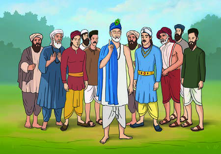<figcaption>Figure fig_ch02_p030_02 (Page 30)</figcaption></figure>
  <figure class="diagram-card" id="fig_ch02_p030_03">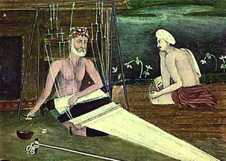<figcaption>Figure fig_ch02_p030_03 (Page 30)</figcaption></figure>
  <div class="page-content">
    <p>–šŒž—Dz”šȼc<br>- ‹šuc 1<br>30<br>VII<br>Í¢„š—ÎsÇ mų›¡ƀĞ›ŽųgŎcsœÅņā‘›ž¡}š§sŠœÅ‚¡ź<br>f”āÇƂxŽ›ƀ›ă‚§–š…šŽÚšÅÚ§Œ†Ǡ›šÚšÄs’›ų‹š•›Æ<br>sœÅņāÇ Žx›ă›Žų‚›†šÆ sŠœ›¡ź ¢„š—sÇ z†ā¡‘ n¡<br>fsŕ›ă›Žų<br>—›ŭŒǟ›c –š¢—š„ŽDZś†¢“Ĭ›<br>Ƃ“Åś㛎ųf‘š›ŽųsŠœÅ<br>p¢Ž<br>ŒĴ¡sšĬĬšÚ›<br>ŽĬ<br>ˆšŅā‘š§ —›ŭ“c Œ–ÆŒš†c<br>mų¢Ŕ—cqÅƣ›ƀ›ăzš‚›“DZ“Ǚ<br>¡‚šĞsž}š§ŒˆžzsÇŒŽš†ŦŽ<br>x}āsÇ“›÷—šŽš…†‚}ā›“<br>eєž†DZŒš¡ų§e¢Ŕ—c“š„›ă<br>zš‚› Œ‚c “Łc s}cŠŒ—›Œ<br>–Ơŧ ‚}ā›“e}›Ǚš†ŒšÚ›<br>ǫ mƼšĹŽc “›¢“x†ā¢‘c<br>sŠœÅ “›ŒÅ”›ă ‹Þ›–ž‰› f”āÇ sŠœ›¡ź Ƃ“Åņā¡‘ n¡<br>–Ǵš…œ†›ă›ŽųŒ‚ˆšŽƠŽDZā¡‘e¢Ŕ—cˆžÅĴŒš›†›ŽšsŽ›ă›ŽųŒ‚ā‘¡}<br>Šš—DZšŽš…†šâŒā¢‘c e¢Ŕ—c e“u›ă eŽžˆ›š £„“Ĺ›Æ<br>“›”Ǵ–›ă›ŽųsŠœÅ‹Þ›¡ ¢ŒšäŒšÅ팚›ƂxŽ›ƀ›Úsc ¡xƪ›Žų<br>‚¡źf”āÇƂxŽ›ƀ›Úų‚›†š›e¢Ŕ—c”›•DZ¢Žš¡}šƀc†š}sÇ¢‚šc<br>–ĕŽ›ăe¢ƀš’Ĭšx›e†‹“āÇsž}›“š›Úž<br>pŽ›ÚÆ„dt›‚†š›Ž›ÚųpŽ÷šŒ<br>ŒtDZ¢†š}§sŠœÅsšŽŒ¢†Ǵ•›ă<br>ešÇˆĚsŌ‰ceƼš¡‚Ŧ<br>ˆšÄ? “–žŽ› sšŽc f‘sÇ<br>ŒŽ›ă“œ’ųˆŽ›—šŽŒš›Œũ“š„c<br>†}ŁcÐ<br>sŠœÅ¡ˆšĞ›ă›Ž›ă¡sšĬ§ˆĚ<br>Ï¢Žšu”šŦ›Ú§Œũ“š„¢Œš?Œũ“š„c<br>¡sšĬ§ g¡‚šųc ¢†}šÄ s’››Ƽ<br>x›s›Ň¡sš¢Ĭ ¢Žšuc¢‹„ŒšsžÐ<br>Œ¡ǮšŽ›ÚÆ sŠœ›†c<br>sžĞÅڝc<br>f‘sÇiˆ—šŽādžÆsšÄ‚}ā›<br>e¢Ŕ—cˆĚÏ|āÇ¡†§ŝsšŽc¢š—ƀ›ÚšŽcŒŽcs}ų“Žc<br>Օ›ÚšŽc¡xŽƀsĹų“Žcp¡Úš§¡‚š’›Æ¡xƪš§|āÇzœ“›Úų‚§<br>iˆ—šŽāÇ|āÇڝ¢“ĬÐ<br>x›Ņc 2.5<br>sŠœc”›•DZŶšŽc÷šŒŒtDZ¢†š¡}šƀc<br>x›Ņc 2.4<br>sŠœÅ¡†§ś¢Å¡ƀĞ›Ž›Úų<br>z§ˆžÅŒDZž–›Ĺ›¡¢”tŽĹ›Æ†›ųc</p>
  </div>
</section>
<section class="page-section" id="page-31">
  <div class="page-header"><span class="page-number">Page 31</span></div>
  <figure class="diagram-card" id="fig_ch02_p031_01"><figcaption>Figure fig_ch02_p031_01 (Page 31)</figcaption></figure>
  <figure class="diagram-card" id="fig_ch02_p031_02"><figcaption>Figure fig_ch02_p031_02 (Page 31)</figcaption></figure>
  <figure class="diagram-card" id="fig_ch02_p031_03"><figcaption>Figure fig_ch02_p031_03 (Page 31)</figcaption></figure>
  <figure class="diagram-card" id="fig_ch02_p031_04"><figcaption>Figure fig_ch02_p031_04 (Page 31)</figcaption></figure>
  <div class="page-content">
    <p>Œ…DzsšgŦDz–DZǘšŽ›sƂǚš†āÇ<br>31<br>sŠœ›¡ź¢„š—csƒš–ŭŋā‘c“š›ă¢Ƽš†›āÇs¡Ĭś sšŽDZāÇ<br>sžĞ›¢ăÅڞ<br>f‘sÇ£„“¡Ĺ ˆ ¢ˆŽs‘›Æ“›‘›Úų<br><br>sŠœÅz†ā¡‘eۓ›”Ǵš–āǡڂ›¡Ž x›Ŧ›ÚšÄ¢ƂŽ›ƀ›ă<br>z†āÇڛ}›Æ –Œ‚Ǵx›Ŧc Œ‚–­—šÅŔ“c “‘ÅŚÄ<br>sŠœ›¡źf”āÇmŅ¢Ĺš‘c–—š›ă ?<br>xÅ㠖cv}›ƀ›Úž<br>uŽ†š†šÚ§¢ǜ—“c –š¢—š„ŽDz“c<br>uŽ †š†šÚc‹š›ŒÅ„š†cpŽ›ÚÆ–ċÄ‚훡ź–ŅśÆ“›NJŒ›Úš<br>¡†Ĺ›e“›¡} “Žų“¡Ž ¡sšǫ}›Úų–Ǵ‹š“cešÇڝĬš›Žų<br>g‚§Œ†Ǡ›šÚ› uŽ †š†šÚ§ŽšŅ›“›NJŒ›ÚšÄ‚ƭšš›ƼˆsŽc<br>e“ÅuŽ †š†šÚ§‚¡ų Žx›ăƂšÅƒ†šuš†ā‘š͕šŠš„§Îfˆ›ÚšÄ<br>‚}ā›ŒǮǫ“Ž¡}–Ơŧ¡sšǫ}›Úų‚§e†DZšŒš§mųŃc“Žų<br>“Ž›s‘š›Žų ¡xšƼ›‚§<br>ˆšĞ›¡ź“Ž›sÇ¢sĞ¢ƀšÇ<br>–ċÄ‚훆§ ‚¡ź ¡‚Ǯ§<br>Œ†Ǡ›š›ešÇuŽ“›<br>¢†š}§äŒ ¢xš„›ă¢ŒšǏ›ă<br>ˆ¡ŒƼǰ „Ž›ŝÅÚ§ †Æ<br>sš†c–‚DZ–ۆš›zœ“›<br>ښ†c uŽ †š†šÚ§iˆ¢„”›<br>ăˆ›ųœ}§–ċÄ–ŅśÆ<br>mŝų“¡Ž–—š›ă§zœ“›<br>ښÄ‚}ā›<br>x›Ņc2.6<br>uŽ†š†šÚc ‹š›ŒÅ„š†c<br>hsƒ›ž¡}m¡ŦƼǰf”ā‘š§†›āÇÚ§‹›ă‚§ ?</p>
  </div>
</section>
<section class="page-section" id="page-32">
  <div class="page-header"><span class="page-number">Page 32</span></div>
  <figure class="diagram-card" id="fig_ch02_p032_01"><figcaption>Figure fig_ch02_p032_01 (Page 32)</figcaption></figure>
  <figure class="diagram-card" id="fig_ch02_p032_02"><figcaption>Figure fig_ch02_p032_02 (Page 32)</figcaption></figure>
  <figure class="diagram-card" id="fig_ch02_p032_03"><figcaption>Figure fig_ch02_p032_03 (Page 32)</figcaption></figure>
  <figure class="diagram-card" id="fig_ch02_p032_04"><figcaption>Figure fig_ch02_p032_04 (Page 32)</figcaption></figure>
  <figure class="diagram-card" id="fig_ch02_p032_05">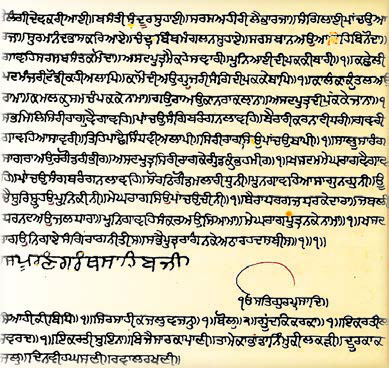<figcaption>Figure fig_ch02_p032_05 (Page 32)</figcaption></figure>
  <figure class="diagram-card" id="fig_ch02_p032_06"><figcaption>Figure fig_ch02_p032_06 (Page 32)</figcaption></figure>
  <figure class="diagram-card" id="fig_ch02_p032_07"><figcaption>Figure fig_ch02_p032_07 (Page 32)</figcaption></figure>
  <figure class="diagram-card" id="fig_ch02_p032_08"><figcaption>Figure fig_ch02_p032_08 (Page 32)</figcaption></figure>
  <figure class="diagram-card" id="fig_ch02_p032_09">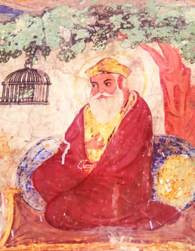<figcaption>Figure fig_ch02_p032_09 (Page 32)</figcaption></figure>
  <div class="page-content">
    <p>–šŒž—Dz”šȼc<br>‹šuc 1<br>32<br>VII<br>ˆ‚›†ĕǰ†žǮšĬ›ÆˆĕšŠ›¡ ¢•t§ˆŽ›¡<br>‚Æ“Ĭ›g¢ƀšÇˆšs›Ǚš†›Æ
÷šŒĹ›š§<br>uŽ †š†šÚ§z†›ă‚§“›“›… Œ‚ā‘¡}f”<br>ā¡‘ –Œ†Ǵ›ƀ›ÚšÄ uŽ †š†šÚ§ NJŒ›ă<br>‚¡źx›ŦsÇƂxŽ›ƀ›Úų‚›†§¢“Ĭ›e¢Ŕ—c<br>gŦDZƩsŝc ˆĹc–ĕŽ›ă<br>Œ‚ā‘¡} †›ŽÅĽsŒše†ǐš†ā¡‘ uŽ<br>†š†šÚ§m‚›ÅśŽųns£„“cmų–¢ŭ”c<br>z†ā‘›¢¡ÚśښÄe¢Ŕ—cNJŒ›ă‚DZ‚<br>–š¢—š„ŽDZc¢Ǜ—c†ŶŒ‚–—›Ǒ‚mųœ<br>f”ā¡‘ ¢ƂšŇš—›ƀ›ă zš‚›“›¢“x†c<br>“›÷—šŽš…†‚œÅƒš}†c‚}ā›“¡ †›ŽšsŽ›ă<br>–šƠśse–Œ‚Ǵ¡Ĺ ¢xš„DZc¡xƪ—Ž›<br>“Åz†Ĺ›†§z†ā¡‘ ¢ƂŽ›ƀ›ămƼš “›‹šuc<br>z†āÇڝc pŽŒ›ă§ ‹äc s’›Úš†šsų<br>͐cušÅÎeƒ“š ¡ˆš‚e}Ú‘¡}Ƃš…š†DZc “DZތšÚ›e¢Ŕ—Ĺ›¡ź<br>f”āLj›ÆښĹ§–›t§Œ‚Ĺ›¡źŽžˆœsŽĹ›†§“’›¡‚‘›ă<br>Œ‚–—›Ǒ‚ –šÅ“Ņ›s<br>–š¢—š„ŽDZc mųœ f”āÇ<br>ƂxŽ›ƀ›Úų‚›†§uŽ †š†šÚ§–ǴœsŽ›ă ŒšÅíāÇm¡ŦƼš¡Œų§<br>s›ƀ§‚ƭššÚs<br>sŠœ›¡źc uŽ†š†šÚ›¡źc –šŒž—DZ“c Œ‚ˆŽ“Œš Ƃ“ÅņāÇ<br>Œ…DZsšgŦDZ›ÆpŽ –ǰǗšŽ›s–Œ†ǴĹ›†§‚}Úcs›ă<br>uŽ÷Ū–š—›Š§s¡ƭ’Ĺ§Ƃ‚›1704 –›g<br>–›t§Œ‚Ĺ›¡ź“›”ŗ÷ŪŒš§<br>f„›÷ŪuŽ÷Ū–š—›Š§
uŽ<br>†š†šÚ›Æ‚}āų–›t§<br>uŽÚŶšŽ¡} Žx†s‘š§<br>Íf„›÷ŪÎś¡źiǫ}Úc<br>ns£„““›”Ǵš–Ĺ›¡ź<br>Ƃš…š†DZczš‚››cu“c”<br>“›¢“x†āǡڂ›¡Žǫx›Ŧ<br>mų›“g‚›ÆiÇ¢ăÅĹ›ĞĬ§£z†Œ‚c<br>ŠŗŒ‚cgǟǰŒ‚c‚}ā›“¡}<br>f”āÇÍf„›÷ŪÎśÆ<br>iÇ¡ƀ}Ĺ››ĞĬ§<br>Ŧ<br>x›Ņc 2.7<br>eƜҏ›¡ŠšŠe}ÆuŽ„ǴšŽ›¡<br>uŽ†š†šÚ›¡źxŒÅx›Ņc</p>
  </div>
</section>
<section class="page-section" id="page-33">
  <div class="page-header"><span class="page-number">Page 33</span></div>
  <figure class="diagram-card" id="fig_ch02_p033_01"><figcaption>Figure fig_ch02_p033_01 (Page 33)</figcaption></figure>
  <figure class="diagram-card" id="fig_ch02_p033_02"><figcaption>Figure fig_ch02_p033_02 (Page 33)</figcaption></figure>
  <figure class="diagram-card" id="fig_ch02_p033_03">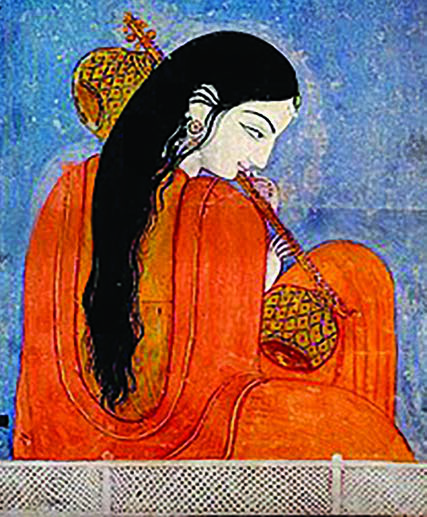<figcaption>Figure fig_ch02_p033_03 (Page 33)</figcaption></figure>
  <div class="page-content">
    <p>Œ…DzsšgŦDz–DZǘšŽ›sƂǚš†āÇ<br>33<br>‹Þ›Ƃǚš†Ĺ›¡ ȼœ–šų›…Dzc<br>Œ…DZsšvĞś¡–Œž—Ĺ›ÆȻœsÇÚ§¡ˆš‚¡“ ecuœsšŽ“c ˆŽ›u†c<br>s“š›ŽųfŽš…†š–Ǵš‚ũDZśc –š—xŽDZāÇ“DZ‚DZǘŒš›Žų›Ƽ<br>‹Þ›ƂǙš†Ĺ›¡źf“›Å‹š“¢Ĺš}<br>sž}›gǏ£„“¡ĹfŽš…›Úų‚›†š›<br>sœÅņā‘c uš†ā‘c Žx›Úų<br>‚›†cfˆ›Úų‚›†c …šŽš‘cȻœsÇ<br>‚ƭšš›<br>ŽšzǙš†›¡ x›¢Ĺš›Æzœ“›ă›Žų<br>ŽzˆŅŽšzsŒšŽ›š›ŽųŒœŽšŠš§<br>e“Åzœ“›‚–­sŽDZāÇmƼǰi¢ˆä›ă§<br>ÕǑ‹Þ››ÆŒ’s›ŒœŽšŠš§Žx›ă<br>ÕǑ‹z†sÇn¡ Ƃ–›ŗŒš§<br>‚Œ›’§†šĞ›¡ Ƃ”ǘŽš›Žų‹Þs“›<br>Ņ›ŒšŽš›ŽųsšŽƩÆeƣšÅfĬšÇ<br>mų›“Å‚ā‘¡}gǏ£„“¢Ĺš}ǫ<br>esŒ’›Ě‹Þ›–žx›ƀ›ÚųsœÅņ<br>ā‘š§g“ÅŽx›ă›Žų‚§<br>“œŽ£”“ ƂǙš†Ĺ›¡ ƂŒtš<br>›ŽųeÚ Œ—š¢„“›ȻœsÇ¢†Ž›Ğ›Žų–šŒž—›s“cfќ“Œše}›ăŒÅ<br>՝sǡڂ›¡Ž †}ųxÅăsÇÚ§e“Å¢†Ķ‚Ǵc †Æs››Žų<br>Œ—šŽšȸ›¡‹—›†šŠš§¡–š§šŠš§sšljœŽ›¡ šÆ¢„„§‚}ā›“Žc<br>‹Þ›ƂǙš†Ĺ›¡ź“‘ÅăƩ§–c‹š“† †Æs›“Žš§<br>‹Þ›ƂǙš†Ĺ›¡ź“‘Å㍛ÆŒœŽšŠš§eڌ—š¢„“›‚}ā›<br>“Ž¡} ˆÿ§mŅ¢Ĺš‘c–—šsŒš¡ų§xÅă¡xƭs<br>‹Þ›Ƃǚš†Ĺ›¡ź‰āÇ<br>–cuœ‚Ĺ›ž¡}c‹Þ››ž¡}cgǏ£„“Ĺ›†§–Ǵc–ŒÅƀ›Úsmų<br>äDZ¢Ĺš¡}š§‹Þ›ƂǙš†cŽžˆc¡sšĬ‚§mųšÆˆ›ÆښĹ§gŦDZ¡}<br>–šŒž—DZ“c Œ‚ˆŽ“Œš ¢Œts‘›Æ ˆ¢ŽšuŒ†ˆŽŒš ŒšǮā‘ĬšÚšÄ<br>‹Þ›ƂǙš†Ĺ›†§–š…›ă<br>‹Þ›ƂǙš†Ĺ›¡ ‹žŽ›ˆäc‹Þs“›s‘c͂š’§ųzš‚›ÚšÅÎmųˆĚ§<br>ŒšǮ›†›ÅĹ¡ƀĞ“Ž›Æ†›ųǫ“Žš›Žųg“Åzš‚›“DZ“Ǚ¢cƖšǥÅÚ§<br>x›Ņc 2.8<br>ŒœŽšŠš§—›ŒšxÆƂ¢„”›¡<br>sšÄ÷š¡ˆ›ź›cu§<br>ST-277-3-SOCIAL SCI. (M)-7-VOL-1</p>
  </div>
</section>
<section class="page-section" id="page-34">
  <div class="page-header"><span class="page-number">Page 34</span></div>
  <figure class="diagram-card" id="fig_ch02_p034_01"><figcaption>Figure fig_ch02_p034_01 (Page 34)</figcaption></figure>
  <figure class="diagram-card" id="fig_ch02_p034_02"><figcaption>Figure fig_ch02_p034_02 (Page 34)</figcaption></figure>
  <figure class="diagram-card" id="fig_ch02_p034_03"><figcaption>Figure fig_ch02_p034_03 (Page 34)</figcaption></figure>
  <figure class="diagram-card" id="fig_ch02_p034_04"><figcaption>Figure fig_ch02_p034_04 (Page 34)</figcaption></figure>
  <div class="page-content">
    <p>–šŒž—Dz”šȼc<br>‹šuc 1<br>34<br>VII<br>‹›ă›ŽųƂ¢‚DZsǙš†Œš†ā¢‘c ¢xš„DZc¡xƪ‚ƉŒš›–šŒž—›s<br>–Œ‚Ǵcmųf”cŽžˆ¡ƀ}šÄ‚}ā›e†‹“ŒįˆĹ›¡ xÅăs‘›Æ<br>ȻœsÇÚ§ˆ¡ÿ}ÚšÄe“–Žc‹›ă›Žųe“Ž¡}e‹›ƂšāÇÚ§ecuœsšŽc<br>‹›ÚscȻœˆŽ•–Œ‚Ǵcmųf”¡Ĺڝ›ă§x›Ŧ›ƀ›Úsc¡xƪ<br>e…Ǵš†Ĺ›¡ź Œ—‚Ǵ¡Ĺڝ›ă§ z†ā¡‘ ¢Šš…“Æڎ›ÚšÄ s’›Ě‚c<br>‹Þ›ƂǙš†Ĺ›¡źƂ¢‚DZs‚š§<br>–ž‰›Ƃǚš†c<br>Ɨ›–ÆŚÄfzšŔœÄt›Æz›eŒœÅt–§“›¢†š}§<br>¢•§t§†›–šŒŔœÄr›¡ sššÄf÷—cƂs}›ƀ›ăˆ¢ä<br>–ŭŔ† “›“Žcr›e›šÄˆš}›Ƽe›ĚšÆ–ƣ‚›Ú›¡Ƽų§<br>–ÆŚ†›ǰmųšÆt–§gښŽDZcr›¢š}§ˆĚ<br>‹Žš…›sšŽ›s¡‘ sššÄgǏ¡ƀ}šĹr›–ŭŔ† „›“–c„ž¢ŽƩ§<br>šŅ¢ˆš› tšÄuš—›¡Ĺ› Žšzš“§ ¢•§t›¡† sšš†šsš¡‚<br>t–§“›¢†š}§¢„•DZ¡ƀНφ›āÇ–ÆŚ¡†x‚›Úsš›Žų“¢Ƽ?Ð<br>t–§ Œˆ}›ˆĚώšzš“›¡†x‚›ăšÆm¡źh¢šs¡Ĺ zœ“›‚c<br>ŒšŅ¢Œe“–š†›Úžˆ¢äm¡źuŽ“›¡†x‚›ăšÆe†”ǴŽŒš ŒŽš†ŦŽ<br>zœ“›‚c‚¡ųšscm†›Ú§†Ǐ¡ƀ}sÐ<br>ŒŽ¡Ĺ‹¡ƀ}šĹ t–§ ‚¡ź–ž‰›uŽ“š †›–šŒŔœÄr›¡}<br>eƂœ‚›¡‹¡ƀĞ›Žųmų¢Ƽh–c‹“sƒ †¢ƣš}§ˆų‚§ ? Œ¡Ǯ¡Ŧš¡Ú<br>sšŽDZāÇhsƒ›Æ†›ų§†›āÇÚ§Œ†Ǡ›š› ?<br>z<br>z<br>‹Þ›¡ £„“¢Ĺš}}Ú“š†ǫ<br>ŒšÅuŒš› –ǴœsŽ›ă“Žš›Žų<br>–ž‰›sÇ e‚›†ǫ pŽ “’›<br>‹Þ›uš†ššˆ†Œš¡ų§ –ž‰›<br>“ŽDZȚÅ<br>sŽ‚›<br>–š…šŽ<br>ښÅڛ}›Æ –ĕŽ›ă§ e“Å<br>–ž‰›‚‚ǴāÇ<br>ƂxŽ›ƀ›ă<br>ns£„““›”Ǵš–c –š¢—š„ŽDZc<br>Œ†•DZ¢Ǜ—c £„“¢Ĺš}ǫ<br>–ŒÅƀc mųœ f”āÇÚ§<br>Ƃš…š†DZc †Æs›<br>–ž‰›–c<br>–ž‰›–cmųˆ„ciĬš‚§<br>sƠ›‘›mųeÅĽc“Žų<br>–‰§(suf)mų“šÚ›Æ<br>†›¢ųš”ŗ›mųeÅĽc<br>“Žų–‰›(safi)mų“šÚ›Æ<br>†›¢ųšf¡ų§ˆį›‚ŶšÅ<br>e‹›Ƃš¡ƀ}ų<br>Sufis of Sindh: Motilal Jotwani. p.1</p>
  </div>
</section>
<section class="page-section" id="page-35">
  <div class="page-header"><span class="page-number">Page 35</span></div>
  <figure class="diagram-card" id="fig_ch02_p035_01"><figcaption>Figure fig_ch02_p035_01 (Page 35)</figcaption></figure>
  <figure class="diagram-card" id="fig_ch02_p035_02"><figcaption>Figure fig_ch02_p035_02 (Page 35)</figcaption></figure>
  <figure class="diagram-card" id="fig_ch02_p035_03"><figcaption>Figure fig_ch02_p035_03 (Page 35)</figcaption></figure>
  <div class="page-content">
    <p>Œ…DzsšgŦDz–DZǘšŽ›sƂǚš†āÇ<br>35<br>Œ¢…DZ•DZÄƂ¢„”ā‘›ÆŽžˆc¡sšĬgǟšŒ›s‹Þ›ƂǙš†Œš§–ž‰›–c<br>g“›}ā‘›¡‹Žš…›sšŽ›sÇ–Ơŧe…›sšŽcfcŠŽzœ“›‚c‚}ā›<br>­s›ssšŽDZā‘›Æ sž}‚Æ<br>NJŗ›ÚšÄ ‚}ā› gŎc<br>Ƃ“‚sǡڂ›¡Žš§–ž‰›<br>ƂǙš†ciÅų“ų‚§ˆũ<br>Ĭǰ†žǮš¢Ĭš¡}gŦDZ›¢Ʃ§<br>–ž‰›ƂǙš†cmś¢ăÅų<br>–›Æ–›sÇmų›¡ƀ}ų<br>ˆũĬ§ –ž‰› “›‹šuā‘›Æ<br>x›–§‚›–—§“Å„›mųœ–›Æ<br>–›s‘š›ŽųgŦDZ›Æ mś<br>¢ăÅų‚§<br>fќzœ“›‚Ĺ›†§Ƃš…š†DZc †Æs›fcŠŽ zœ“›‚Ĺ›Æ†›ų§p’›Ě<br>†›ų“Žš§–ž‰›uŽÚŶšÅ–ž‰›uŽ“›¡†ˆœÅ¡•§t§
mųce†š›s¡‘<br>ŒŽœ„§mųc “›‘›ă›Žų<br>–‰›s‘¡} ‚šŒ–Ǚā‘š›ŽųtšÄuš—sÇeښ¡Ĺ –šŒž—›s<br>¢sůā‘š›Žų–ž‰›¢sůā‘›Æ–ŒmųƂ¢‚DZs uš†ššˆ†£”››Æ<br>fˆ›ă›Žų‹Þ›uš†ā‘š§tǁš›sÇ (Qawwali)–ÆņŧŒuÇ<br>sšvĞā‘›Æ“›“›… Œ‚“›‹šuāÇڛ}›ÆosDZŒĬšÚšÄ–ž‰›sÇÚ§<br>–š…›ă›Žų<br>gŦDZ›¡ Ƃ…š† –ž‰›“ŽDZŶšŽce“ŽŒš›ŠŰ¡ƀĞƂ¢„”ā‘Œš§x“¡}<br>¢xÅśŽ›Úų‚§<br>–ž‰›“ŽDzŶšÅ<br>Ƃ¢„”āÇ<br>¢•§t§”›—šŠŔœÄ–—§“Å„›<br>–›Æ—Ǯ§<br>¢•§t§†›–šŒŔœÄr›<br>Ɨ›<br>tǴšzš ¡Œš§†ŔœÄx›–§‚›<br>ez§ŒœÅ<br>–ž‰›ƂǙš†“Œš›ŠŰ¡ƀЧpŽƌ›ƀ§ŠÚ§†›Åƣ›Úų‚›†š<br>“”DZŒš “›“ŽāÇƌ›ˆ§¢ˆz§ŒšĶs›Æ‚ƭššÚž<br>x›Ņc2.9<br>†›ǠšŒŔœÄr›¡} „ÅuƩŒų›¡tǁš›</p>
  </div>
</section>
<section class="page-section" id="page-36">
  <div class="page-header"><span class="page-number">Page 36</span></div>
  <figure class="diagram-card" id="fig_ch02_p036_01">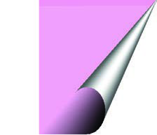<figcaption>Figure fig_ch02_p036_01 (Page 36)</figcaption></figure>
  <figure class="diagram-card" id="fig_ch02_p036_02"><figcaption>Figure fig_ch02_p036_02 (Page 36)</figcaption></figure>
  <figure class="diagram-card" id="fig_ch02_p036_03"><figcaption>Figure fig_ch02_p036_03 (Page 36)</figcaption></figure>
  <figure class="diagram-card" id="fig_ch02_p036_04">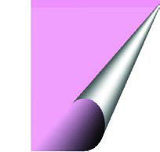<figcaption>Figure fig_ch02_p036_04 (Page 36)</figcaption></figure>
  <figure class="diagram-card" id="fig_ch02_p036_05">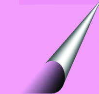<figcaption>Figure fig_ch02_p036_05 (Page 36)</figcaption></figure>
  <figure class="diagram-card" id="fig_ch02_p036_06"><figcaption>Figure fig_ch02_p036_06 (Page 36)</figcaption></figure>
  <figure class="diagram-card" id="fig_ch02_p036_07"><figcaption>Figure fig_ch02_p036_07 (Page 36)</figcaption></figure>
  <figure class="diagram-card" id="fig_ch02_p036_08"><figcaption>Figure fig_ch02_p036_08 (Page 36)</figcaption></figure>
  <div class="page-content">
    <p>–šŒž—Dz”šȼc<br>‹šuc 1<br>36<br>VII<br>‹Þ›¡ £„“¢Ĺš}§<br>e}Ú“š†ǫ<br>ŒšÅuŒš›<br>–ǴœsŽ›ă<br>“Žš›Žų<br>–ž‰›sÇ<br>£„“¢Ĺš}§<br>e}Ú“š†ǫpŽ<br>ŒšÅuc‹Þ›uš†š<br>šˆ†Œš¡ų§<br>–ž‰›<br>“ŽDZȚÅ<br>sŽ‚›<br>Ƃš¢„”›s ‹š•s‘¡}“‘Åă<br>–š…šŽÚšÅÚ§Œ†Ǡ›šsų‚›†¢“Ĭ›‹Þ›–ž‰›ƂxšŽsÅƂš¢„”›s<br>‹š•s‘›š§f”ƂxšŽc†}ś‚§g‚§Ƃš¢„”›s ‹š•s‘¡} “‘ÅăƩ§<br>sšŽŒš›‚Œ›’§ˆĕšŠ›Šcuš‘›ŒšĹ›¡‚ÿ§sųŒš‘c‚}ā›<br>‹š•s‘›Æ…šŽš‘c‹Þ›sš“DZāÇŽx›Ú¡ƀНsž}š¡‚Ƃš¢„”›s‹š•s‘›Æ<br>…šŽš‘c–š—›‚DZՂ›s‘ŒĬš›¢ˆÅ•DZ†c —›ŭ›c ¢xÅųĬši„<br>gŦDZ¡} –ǰǗšŽ›s–Œ†ǴĹ›†§i„š—ŽŒš§gښ¡Ĺi„ ‹š•›¡<br>nǮ“cNJ¢ŗ†šm’ĹsšŽ†š›ŽųeŒœÅt–§sŠœ›¡ź¢„š—sÇ<br>—›ŭ›‹š•¡–ƠųŒšÚ›͌—š‹šŽ‚cÎ͎šŒšcÎmų›“c ŒǮՂ›s‘c“›“›…<br>‹š•s‘›¢Ʃ§“›“Åņc¡xƭ¡ƀНg‚§‹š•Ʃc –š—›‚DZś†ciÅ¢“s›<br>Ƃš¢„”›s ‹š•s‘›ĬšƂ…š†–š—›‚DzՂ›s‘c<br>Žx›‚šÚ‘c<br>Ƃš¢„”›s‹š•<br>Ղ›<br>Žx›‚š“§<br>‚Œ›’§<br>†šš›Ž „›“DZƂŠŰc<br>‚›ŽŒ£sÇ<br>fȺšÅŒšÅ<br>†š†šÅŒšÅ<br>sų}<br>“x†āÇ<br>Š–“ĴeÚ Œ—š¢„“›<br>eƼŒƂ‹<br>¡‚ÿ§<br>Œ—š‹šŽ‚ “›“Åņc<br>†ųƭ‚›ÚĴŽƂu„<br>Šcuš‘›<br>uœ‚¢uš“›ŭc<br>z¢„“Ä<br>—›ŭ›<br>ˆŃš“‚§<br>Œš›s§Œ—ƣ„§z§–›<br>Œš‘c<br>蚆ƀš†<br>e…DZšŃŽšŒšcs›‘›ƀšĞ§<br>Œ—§ŔœÄŒš<br>ˆžŦš†c<br>‚ĕŧŽšŒš†zÄm’ĹĄÄ<br>tš–›Œ—ƣ„§<br>Ƃš¢„”›s‹š•s‘¡}“‘ÅăƩ§‹Þ›Ƃǚš†c–—šsŒš¡‚ā¡†?<br>s›ƀ§‚ƮššÚs</p>
  </div>
</section>
<section class="page-section" id="page-37">
  <div class="page-header"><span class="page-number">Page 37</span></div>
  <figure class="diagram-card" id="fig_ch02_p037_01"><figcaption>Figure fig_ch02_p037_01 (Page 37)</figcaption></figure>
  <figure class="diagram-card" id="fig_ch02_p037_02"><figcaption>Figure fig_ch02_p037_02 (Page 37)</figcaption></figure>
  <figure class="diagram-card" id="fig_ch02_p037_03"><figcaption>Figure fig_ch02_p037_03 (Page 37)</figcaption></figure>
  <figure class="diagram-card" id="fig_ch02_p037_04"><figcaption>Figure fig_ch02_p037_04 (Page 37)</figcaption></figure>
  <figure class="diagram-card" id="fig_ch02_p037_05"><figcaption>Figure fig_ch02_p037_05 (Page 37)</figcaption></figure>
  <figure class="diagram-card" id="fig_ch02_p037_06"><figcaption>Figure fig_ch02_p037_06 (Page 37)</figcaption></figure>
  <figure class="diagram-card" id="fig_ch02_p037_07"><figcaption>Figure fig_ch02_p037_07 (Page 37)</figcaption></figure>
  <figure class="diagram-card" id="fig_ch02_p037_08"><figcaption>Figure fig_ch02_p037_08 (Page 37)</figcaption></figure>
  <figure class="diagram-card" id="fig_ch02_p037_09"><figcaption>Figure fig_ch02_p037_09 (Page 37)</figcaption></figure>
  <figure class="diagram-card" id="fig_ch02_p037_10"><figcaption>Figure fig_ch02_p037_10 (Page 37)</figcaption></figure>
  <figure class="diagram-card" id="fig_ch02_p037_11"><figcaption>Figure fig_ch02_p037_11 (Page 37)</figcaption></figure>
  <figure class="diagram-card" id="fig_ch02_p037_12"><figcaption>Figure fig_ch02_p037_12 (Page 37)</figcaption></figure>
  <figure class="diagram-card" id="fig_ch02_p037_13"><figcaption>Figure fig_ch02_p037_13 (Page 37)</figcaption></figure>
  <figure class="diagram-card" id="fig_ch02_p037_14"><figcaption>Figure fig_ch02_p037_14 (Page 37)</figcaption></figure>
  <figure class="diagram-card" id="fig_ch02_p037_15"><figcaption>Figure fig_ch02_p037_15 (Page 37)</figcaption></figure>
  <figure class="diagram-card" id="fig_ch02_p037_16"><figcaption>Figure fig_ch02_p037_16 (Page 37)</figcaption></figure>
  <figure class="diagram-card" id="fig_ch02_p037_17"><figcaption>Figure fig_ch02_p037_17 (Page 37)</figcaption></figure>
  <figure class="diagram-card" id="fig_ch02_p037_18"><figcaption>Figure fig_ch02_p037_18 (Page 37)</figcaption></figure>
  <figure class="diagram-card" id="fig_ch02_p037_19"><figcaption>Figure fig_ch02_p037_19 (Page 37)</figcaption></figure>
  <figure class="diagram-card" id="fig_ch02_p037_20"><figcaption>Figure fig_ch02_p037_20 (Page 37)</figcaption></figure>
  <div class="page-content">
    <p>Œ…DzsšgŦDz–DZǘšŽ›sƂǚš†āÇ<br>37<br>‹Þ›–ž‰›f”ā‘¡}–ǵš…œ†c<br>‹Þ›–ž‰›ƂǙš†ā‘¡} Ƃ“Åņ‰Œš›–Œž—Ĺ›Æm¡ŦƼǰ ŒšǮāÇ<br>iĬš›Úšc ? ‚ų›Ž›Úųx›ŅœsŽcNJŗ›Ú<br>Œ‚–—›Ǒ‚<br>zš‚›“›¢“x†Ĺ›¡†‚›¡Žǫ<br>Œ¢†š‹š“c<br>‹Þ›–ž‰›x›Ŧs‘¡}<br>–ǵš…œ†c<br>e}›¢ăƹ›Ú¡ƀĞ<br>fxšŽā¡‘ ¢xš„DZc<br>¡xƭš†ǫ<br>Œ¢†š‹š“c<br>sž}‚Æf”āÇsžĞ›¢ăÅڞ<br>Œ…DZsšvĞśÆ gŦDZÄ –Œž—Ĺ›Æ ¡ˆš‚¢“ s}Ĺ i㆜x‚Ǵā‘c<br>–šŒž—›sš–Œ‚Ǵā‘c†›†›ų›Žųeښ¡Ĺ Žšȸœ–šŒž—›sš“Ǚs¡‘<br>ڝ›ă§ ŒÄ e…DZšĹ›Æ xÅă¡xƪ¢Ƽš. h –š—xŽDZśÆ Œ†•DZ¡Ž<br>pŽŒ›ƀ›ă§ –cvŕāÇ să§ –Œš…š†šŦŽœäc ǔǏ›Úų‚›Æ ‹Þ›<br>–ž‰›ƂǙš†āÇ“› ˆÿ§“—›ă›ĞĬ§“DZ‚DZǘŒ‚ā‘›¡f”āÇ<br>–š…šŽÚšŽ›¢¡ÚśښÄhƂǙš†āÇÚ§s’›Ě“›“›… zš‚›<br>Œ‚“›‹šuā‘›ÆiÇ¡ƀĞ›Žųz†āÇÚ§–—“Åś‚Ǵ¢Ĺš¡} s’›šÄ‹Þ›<br>–ž‰›f”ā‘¡} –Ǵš…œ†c–—šsŒš›f…†›sgŦDZÄ–Œž—Ĺ›¡ź<br>ŒtŒŝs‘š –šŒ„š›s –­—šÅŔc †š†š‚ǴśÆ ns‚Ǵc –š¢—š„ŽDZc<br>‚DZ‚Š—–ǴŽ‚ ‚}ā›“‹Þ›–ž‰›f”ā‘¡} ¢ƂŽ›Æ†›ų§<br>Žžˆc¡sšĬ“š§<br>‚}ÅƂ“ÅņāÇ<br>z<br>f…†›sgŦDZ›¡ £““›…DZā¡‘osDZ¡ƀ}Ĺų–Œ†Ǵ–cǗšŽc<br>i}¡}Úų‚›†§‹Þ›–ž‰›ƂǙš†āÇmā¡†–—š›ămų§pŽ<br>xÅ㠖cv}›ƀ›Ús<br>z<br>͊–“Ĵ¡}f”ā‘c–¢ŭ”ā‘cÎǗ›Ǯ§‚ššÚ›e“‚Ž›ƀ›ă§<br>ȿ›ˆ§Ǯ§ǗžÇ“›Ú››Æ¢xÅڝs</p>
  </div>
</section>
<section class="page-section" id="page-38">
  <div class="page-header"><span class="page-number">Page 38</span></div>
  <figure class="diagram-card" id="fig_ch02_p038_01">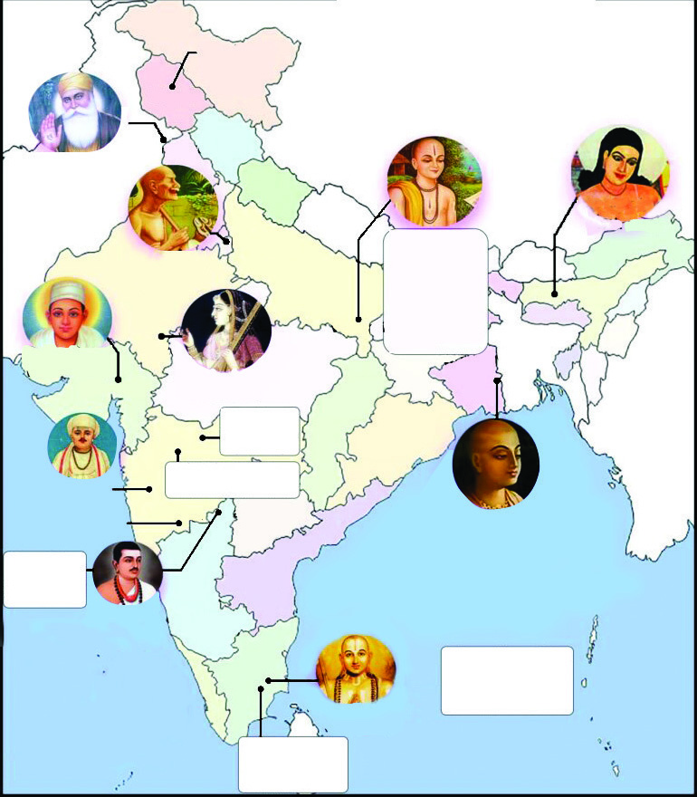<figcaption>Figure fig_ch02_p038_01 (Page 38)</figcaption></figure>
  <div class="page-content">
    <p>–šŒž—Dz”šȼc<br>‹šuc 1<br>38<br>VII<br>z  ‚š¡’ †Æs››Ğǫ‹žˆ}ś¡ź–—š¢Ĺš}sž}›‹Þ›–ž‰›ƂxšŽsŽ¡}<br>x›Ņā‘cf”ā‘ciÇ¡ƀ}Ĺ›pŽ ˆ‚›ƀ§›z›ǮÆfƊc‚ƭššÚž<br>x›Ņc2.10<br>Œ…DZsšgŦDZ›Æzœ“›ă›ŽųƂ…š†‹Þ›–ž‰›ƂxšŽsÅ<br>uŽ†š†šÚ§<br>(15-16 †žǯšĬ§)<br>„š„„šÆ<br>(16-17 †žǯšĬ§
<br>ŒœŽš‹š›<br>(15-16 †žǯšĬ§
<br>‚ÚšDZ<br>(17DZ †žǯšĬ§
<br>Š–“Ĵ<br>(12DZ †žǯšĬ§
<br>ŽšŒš†zšxšŽDz<br>(12DZ †žǯšĬ§
<br>£x‚†DzŒ—šƂ‹<br>(15-16 †žǯšĬ§
<br>14DZ †žǯšĬ§<br>ÑŽšŒš†ŭ<br>15DZ †žǯšĬ§<br>Ñ‚‘–œ„š–§<br>ÑsŠœÅ„š–§<br>16DZ †žǯšĬ§<br>Ñ“ƽ‹šxšŽDz<br>яš§„š–§<br>9DZ †žǯšĬ§<br>fȻšÅŒšÅ<br>Ñ¡ˆŽ›šȻšÅ<br>цƣšȻšÅ<br>ÑfĬšÇ<br>7DZ †žǯšĬ§<br>†š†šÅŒšÅ<br>ÑeƀÅ<br>Ñ–cŠŰÅ<br>“œŽ£”“Å<br>ÑeƽŒƂ‹<br>ÑeÚ<br>Œ—š¢„“›<br>–žÅ„š–§<br>(16DZ †žǯšĬ§
<br>”ÿÅ¢„“<br>(15DZ †žǯšĬ§
<br>¢•§t§<br>”›—šŠŔœÄ<br>–—§“Å„›<br>(12DZ †žǯšĬ§
<br>Œ…DzsšgŦDz›Æzœ“›ă›ŽųƂ…š†<br>‹Þ›–ž‰›ƂxšŽsÅ<br>¢•§t§<br>†›–šŒŔœÄ<br>r›<br>(13-14<br>†žǯšĬ§
<br>šÆ¢„„§<br>(14 †žǯšĬ§)<br>tǵšzš<br>¡ŒšƬŔœÄ<br>x›–§‚›<br>(14DZ<br>†žǯšĬ§
<br>14DZ †žǯšĬ§<br>¡xšÚ¢Œ<br>16DZ †žǯšĬ§<br>ns†šƒ<br>9DZ †žǯšĬ§<br>s¢”tŽfȻšÅ</p>
  </div>
</section>
<section class="page-section" id="page-39">
  <div class="page-header"><span class="page-number">Page 39</span></div>
  <figure class="diagram-card" id="fig_ch02_p039_01"><figcaption>Figure fig_ch02_p039_01 (Page 39)</figcaption></figure>
  <figure class="diagram-card" id="fig_ch02_p039_02"><figcaption>Figure fig_ch02_p039_02 (Page 39)</figcaption></figure>
  <figure class="diagram-card" id="fig_ch02_p039_03"><figcaption>Figure fig_ch02_p039_03 (Page 39)</figcaption></figure>
  <figure class="diagram-card" id="fig_ch02_p039_04"><figcaption>Figure fig_ch02_p039_04 (Page 39)</figcaption></figure>
  <figure class="diagram-card" id="fig_ch02_p039_05"><figcaption>Figure fig_ch02_p039_05 (Page 39)</figcaption></figure>
  <div class="page-content">
    <p>ÏmƼšƂ‚›–Ű›s‘›Æ†›ųcŽäšsÅĶ‚ǴśÆ†›ųcgŦDZ¡¢Œšx›ƀ›Úų<br>pŽ‹Žv}†Ʃš›|šÄˆŽ›NJŒ›ÚcnǮ“c„Ž›ŝŽš Œ†•DZÅÚ§ŽšzDZ¡Ĺ<br>Žžˆ¡ƀ}Ĺų‚›ÆsšŽDZ䌌š”ƒŒĬšsscŽšzDZce“Ž¢}‚š¡ų<br>e“Åڝ¢‚šųsc¡xƭci㆜x‚Ǵā‘›Ƽš¡‚mƼš–Œ„šÚšŽc‚›sĚ<br>–­—šÅ„¢Ĺš¡} zœ“›ÚųgŦDZƩšš§m¡źˆŽ›NJŒc¡‚šĞsž}š§Œ¡}c<br>—Ž›“ǘÚ‘¡}c”šˆŒ›ƼšĹgŦDZˆŽ•ŶšŽ¡}e“sš”āÇe¢‚¢ˆš¡<br>ȻœsÇڝce†‹“›Úš†šsųgŦDZÐ<br>Œ—šŃšušŰ›<br>͍cu§gŦDZÎË1931)<br>Œs‘›¡iŗŽ›“š›ă“¢Ƽš ?<br>‹Žv}†“’›c“’›sšĞ›c<br>3<br>Ï<br>x›Ņc3.1</p>
  </div>
</section>
<section class="page-section" id="page-40">
  <div class="page-header"><span class="page-number">Page 40</span></div>
  <div class="page-content">
    <p>–šŒž—Dz”šȼc<br>‹šuc 1<br>40<br>VII<br>–Ǵš‚ũDZś†¢”•Œš¢š†ƣÇ‹Žv}†¡Ú›ă§x›Ŧ›ă‚}ā›‚§ ?<br>‹š“›gŦDZ¡}‹Žv}†›Æm¡ŦƼǰf”āÇiĬšs¡Œųš§Œ—šŃz›<br>f÷—›ă‚§ ?<br>z<br>ˆŽŒš…›sšŽc<br>z<br>‚DZ‚<br>z<br>–š¢—š„ŽDZc<br>z<br>›cu†œ‚›<br>z<br>z<br>‹Žv}†–ǵš‚ũDz–ŒŽ¢–†š†›s‘¡}–ǵſc<br>Ɩ›Ğœ•§f…›ˆ‚DZś¡†‚›¡ŽiÅų“ųf„DZ¡ĹŠ—z†–ŒŽŒš›Žų<br>1857 ¡pųǰ–Ǵš‚ũDZ–ŒŽc£–†›sÅ¢ušŅ“ÅíښÅŽšzšÚŶšÅƂ‹Ú<br>ŶšÅsŕsÅ‚}ā›†›Ž“…›“›‹šuā‘š§–ŒŽĹ›Æˆÿš‘›s‘š‚§z†āÇ<br>ڛ}›ÆŒ‚–­—šÅŔśžų›ǫ¢„”œ¢Šš…c“‘Åŝų‚›†§h–ŒŽc<br>–—šsŒš›¢„”œ¢Šš…c”Þ›¡ƀĞ¢‚š¡}£“¢„”›sf…›ˆ‚DZś¡†‚›¡Ž<br>gŦDZ¡}“›“›…‹šuā‘›Æ…šŽš‘cƂš¢„”›s–cv}†sÇŽžˆ¡ƀНgŦDZÄ<br>e¢–š–›¢•ÄŒŝš–§¢†Ǯœ“§e¢–š–›¢•Äˆž¡†–šÅ“z†›s§–‹<br>mų›“x›i„š—Žā‘š§Ƃš¢„”›s–Ǵ‹š“ŒǫgŎc–cv}†s‘›Æ<br>†›ų§“›‹›ųŒš›¢„”œ‚Ĺ›ÆpŽ–cv}†iÅų“ų‚§1885 Æ ŽžˆœÕ‚Œš<br>gŦDZĆš•Æ¢sšÃ÷–›ž¡}š§e¢‚š¡}¢„”œ‚Ĺ›ÆƖ›Ğœ•§<br>“›Žŗ Ƃ¢äš‹āÇÚ§ pŽ –cv}›‚Œš†c £s“ų gŦDZ›¡ “›“›…<br>z†“›‹šuā‘¡} ƂLjāÇ e…›sšŽ›s‘¡} NJŗ›Æ¡ƀ}Ĺs zš‚›Œ‚<br>Ƃš¢„”›s x›ŦsÇڂœ‚Œš› z†āÇڛ}›Æ ¢„”œ¢Šš…c “‘Åŝs<br>‚}ā›“š›ŽųhƂǙš†Ĺ›¡źƂ…š†äDZāÇ<br>“›¢„”‹Žce“–š†›ƀ›Úsmų‚ŒšŅŒƼ¡Œă¡ƀĞ–šŒž—›sŽšȸœzœ“›‚c<br>q¢ŽšgŦDZښŽ†ciƀšÚsmų‚c–Ǵš‚ũDZ–ŒŽƂǙš†Ĺ›¡źƂ…š†<br>äDZā‘›Æpųš›Žų–ŒŽĹ›¡źq¢ŽšvĞścŒ›‚‚œƿ¢„”œ“š„c<br>iÇƀ¡}¢†Ķ‚Ǵś†§“DZ‚DZǘsš’§xƀš}sÇiĬš›Ž¡ųÿ›cx›e}›Ǚš†<br>f”ā‘c ŒžDZā‘c iÅśƀ›}›ă¡sšĬš›Žų¢„”œƂǙš†c<br>Œ¢ųšĞ¢ˆš›Žų‚§<br>ušŰ›z›¡}“Ž¢“š}sž}›š§–Ǵš‚ũDZ–ŒŽƂǙš†Ĺ›†§Š—z†–Ǵ‹š“c<br>£s“ų‚§ušŰ›z›¡}–Ǵš…œ†c–šŒž—›s†œ‚››Æe…›ǐ›‚Œšz†š…›ˆ‚DZc<br>mųf“”DZc”ÞŒšÚ›¢„”œƂǙš†cŒ¢ųšĞ“ă–Ǵš‚ũDZc–šŒž—›s<br>†œ‚››Æe…›ǐ›‚Œš–Œ‚Ǵc–š¢—š„ŽDZcŒ‚–­—šÅ„cmųœf”ā‘c<br>ŒžDZā‘Œš§ †ƣ¡} ‹Žv}†¡} e}›Ĺš¢sĬ¡‚ų§ ¢†‚šÚÇ</p>
  </div>
</section>
    </main>
    <footer>
      <div class="nav-bar"><a href="part_1_pages_120.html">← Pages 1-20</a><a href="index.html">☰ Index</a><a href="part_1_pages_4160.html">Pages 41-60 →</a></div>
    </footer>
  </div>
</body>
</html>
